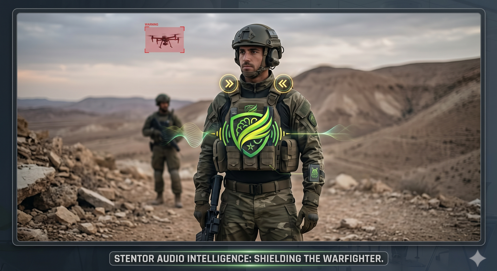

נוהל הפעלה שדתי — ציוד סטנטור
מסמך זה מפרט את נוהל ההתקנה, הבדיקה והפענוח של מערכת סטנטור המותקנת על אפוד הלוחם. קרא בעיון בטרם יציאה לשטח. אי עמידה בהוראות עלולה לפגוע בכשירות המערכת.

כתף ימין
מנוע רטט לחיווי איום מגזרה ימנית.
כתף שמאל
מנוע רטט לחיווי איום מגזרה שמאלית.
מרכז החזה
לב המערכת, כאן ישב הESP32 בנוסף למיקורופון ותא הסוללה.
מיקום רכיבים על הווסט
- 01מרכז החזה — מארז בקר ESP32 + פתח מיקרופון INMP441 פנוי מחסימה.
- 02כתף ימין — מנוע רטט לחיווי איום מגזרה ימנית.
- 03כתף שמאל — מנוע רטט לחיווי איום מגזרה שמאלית.
- 04תא סוללה — חיבור Type-C מאובטח לסוללת גיבוי.
נוהל התקנה וזיווד על הווסט
ביצוע נכון של ההתקנה מבטיח קליטה אקוסטית תקינה לאורך כל המשימה.
-
01
מיקום המארז המרכזי
הצמד את מארז הבקר במרכז החזה, בגובה קו המולה העליון, כשפתח המיקרופון פונה קדימה וכלפי מעלה.
-
02
מניעת חסימת הפתח האקוסטי
ודא כי פתח המיקרופון אינו חסום באבק, בוץ, רצועות ציוד נוספות או ציוד מוסת. נקה את הפתח במברשת יבשה בלבד — אין להשתמש בנוזלים.
-
03
חיבור מודולי הרטט
ודא כי מודולי הרטט בכתף ימין ושמאל מהודקים היטב לרצועת האפוד וללא מרווח אוויר, לצורך חיווי מישושי חד וברור.
-
04
אבטחת כבל הסוללה
חבר את כבל ה-Type-C מתא הסוללה למארז המרכזי, ובדוק כי המחבר נעול ותא הסוללה סגור ואטום.
בדיקת כשירות לפני יציאה
Pre-Mission Check — יש לבצע לפני כל יציאה מבצעית, ללא יוצא מן הכלל.
-
01
הפעלת המערכת
הפעל את הבקר באמצעות מתג ההפעלה שבמארז המרכזי, וודא הדלקת חיווי LED ירוק המעיד על עליית המערכת (Boot).
-
02
אימות רטט כפול
עם עליית הבקר, על שני מודולי הרטט — ימני ושמאלי — לפעול פעימה אחת בו-זמנית. היעדר רטט באחד הצדדים מעיד על תקלה ומחייב דיווח למפקד הציוד.
-
03
בדיקת קישוריות שו"ב
ודא סנכרון עם מערכת השו"ב (C2) באמצעות בדיקת מצב "מקוון" במארז. מצב "לא מקוון" מחייב פעולה עצמאית מקומית בלבד (Edge Mode).
-
04
בדיקת מפלס סוללה
ודא מפלס טעינה של 100% טרם יציאה לפעילות מתוכננת מעל 8 שעות רצופות.
מקרא התרעות מבצעי
פענוח דפוסי הרטט המישושיים — יש לשנן לפני כל משימה.
-
רטט בודד — כתף ימין
איום מזוהה בגזרה הימנית. פנה קדם למקור האיום ובצע הערכת מצב.
-
רטט בודד — כתף שמאל
איום מזוהה בגזרה השמאלית. פנה קדם למקור האיום ובצע הערכת מצב.
-
רטט מהיר ומקביל — דו-צדדי
סכנה מיידית מטווח קרוב. בצע פעולת מיגון / התגוננות מיידית בהתאם לנהלי היחידה.
נספח עמידות ותחזוקת שטח
הנחיות תחזוקה שוטפת לשמירה על כשירות המערכת בתנאי שטח משתנים.
-
סוללה
יש לטעון את סוללת הגיבוי במלואה לפני כל משימה. אורך חיי סוללה — עד 30 שעות פעילות רציפה. הימנע מטעינה בטמפרטורות קיצון.
-
לחות וגשם
המארז אטום בתקן IP65. יש לוודא סגירה מלאה של תא הסוללה בתנאי גשם. יש לייבש את פתח המיקרופון לאחר חשיפה ממושכת ללחות.
-
תחזוקה שוטפת
בדוק תקינות חיבורי הכבלים אחת ליום פעילות. דווח על כל סדק, שריטה עמוקה או חשיפת רכיבים למפקד הציוד באופן מיידי.